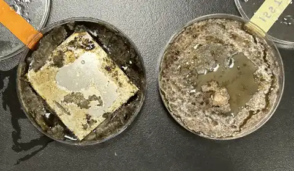

Examining the Effects of Microgravity on the Corrosivity of Aspergillus niger
Ewwwwwwwwwwwww, stinky fungi
What will happen if they invade ISS?

Fungal corrosion happens when fungi form biofilms on the metal surfaces and release organic acid that can cause severe pitting on aluminum, steel, copper, or any metal you can think of. Aspergillus Niger, is a major type of fungi detected on the ISS, composed of 13.7% of all surface corrosion fungi. However, there were no existing research investigate aspergillus metal corrosion in real microgravity (previous research has only done in simulated gravity environment or drop tower).
In this experiment, we compared Aspergillus niger induced corrosion on two most commonly used materials in aerospace, aluminum alloy 6061 and carbon fiber, in microgravity.
What's novel was that we weren't just growing the fungi in microgravity. We are comparing how the fungi corrode those two metals differently. This will contribute to both the understanding of how different materials resist acid corrosion, and new synthesis materials for spacecrafts in the future.